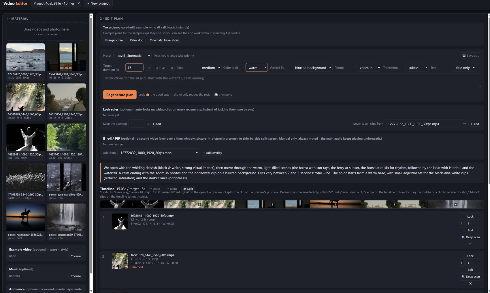

Video Editor
Turns raw clips and photos into a finished vertical (9:16) video for social media. Claude proposes the cut, the color and the on-screen text; the code validates the plan and renders it with ffmpeg, so the AI never touches ffmpeg directly. You stay in control: change or lock anything before it renders.

Play with it
A real, saved project: the same ten sample clips and photos the app was tested with, not a live install.
Video Editor
Project demo · 10 files1 · Material
2 · Edit plan
The AI's reasoning
3 · Preview & export
Real rendered draft (540×960, the app's draft size, for checking; Final renders at 1080×1920 for posting) from the "Cinematic travel story" plan, rendered by the actual ffmpeg pipeline, not a mockup.
Why this exists
Hand-editing a 30-second reel (picking the best seconds, cutting to a beat, adding text) easily takes an hour. I wanted a tool that gets a solid first draft in about two minutes.
You drop in your clips and photos, pick a style, and the AI plans the edit: order, cuts, color, text. You stay in control: adjust anything, lock the cuts and texts that already work, and regenerate only what's left. The interesting part wasn't getting an AI to suggest an edit; it was drawing a hard line between what the AI is allowed to decide and what the code enforces regardless of what the AI proposes. The AI never writes a single ffmpeg command.
What it does
Everything below is optional and toggleable: a Settings panel keeps the interface uncluttered.
●AI editing
Claude picks the order, cuts, color and text, and returns a plan the code validates before it ever touches ffmpeg. Lock any cut or text you like and regenerating only reworks what's unlocked, and standing rules like "keep the opening 3s" apply automatically every time.
●Manual editing, once the draft lands
A full NLE-style toolkit: undo/redo, drag-trim, a split tool, per-clip speed (0.25×–4×), manual pan/reframe, multi-select, free-drag text, plus B-roll, picture-in-picture and split-screen overlays.
●Audio and music
Custom beat detection written from scratch in plain numpy finds the BPM and beat grid, so cuts and zoom punches can snap to the music while the original clip audio ducks automatically underneath.
●Previews and export
A live quick-preview re-encodes only what changed, kept fully separate from the real export path. Export a finished MP4, or an FCPXML timeline that reopens your original files in DaVinci Resolve / Final Cut.
Highlights
- "AI decides, code executes." Claude never touches ffmpeg: it returns a JSON edit plan validated against a strict schema (Pydantic) before any video command runs, so a bad or unexpected response gets rejected and retried once instead of executing anything unvalidated.
- Lock and regenerate, not start over. Lock any cut or text that already works and hit Regenerate: only the unlocked parts get reworked. Standing lock rules ("keep the opening 3s", "never touch this file") apply automatically on every pass instead of re-locking by hand each time.
- Beat tracking from scratch. Custom beat detection in plain numpy, no external library, finds the BPM and beat grid, so cuts and zoom punches can snap to the music while the original clip audio ducks automatically underneath.
- A robustness pass that actually tried to break it. A dedicated audit looked for what could crash the server or corrupt a project. One bad upload used to take the whole project down. That one and three other real bugs are fixed, each verified with an end-to-end test, not just "it ran."
- A full manual toolkit once the AI draft lands. Drag-trim, a split tool, per-clip speed, a waveform display, multi-select, free-drag text, and B-roll/picture-in-picture overlays. None of it calls the API; all of it is plain timeline editing.
My role
Product and design
Product idea, UX, and the "AI decides, code executes" boundary: the plan Claude returns is validated against a strict schema before any ffmpeg command runs. Built in pair-programming with Claude, starting from a written requirements doc and working through the pipeline stage by stage.
Quality
Every stage tested by hand: the render pipeline, the AI planner, the server and UI. Harder features (overlay compositing, audio timing, beat sync) were checked against purpose-built test clips with exact pixel and frequency checks, not just "it ran." A dedicated robustness pass found and fixed 4 real crash/data-loss bugs. 65 automated tests run on every push: 27 on the edit-plan validation, 16 on the AI request loop with a fake AI client, 8 on the missing-API-key check and 14 on project names, output formats and removing a file; rendering, audio and the UI are still tested by hand.
Architecture
The AI never writes ffmpeg: planner.py calls Claude, edl.py validates the plan (overlaps, transitions, text) before render.py runs anything; an invalid plan gets one retry with the validation error attached. Beat tracking, subtitle timing, and the live-preview cache are each isolated so one feature's shortcuts can't leak into another's correctness.
Known limitations
Said plainly, not hidden in fine print: part of being honest about what shipped and what didn't.
- The AI only sees 4 frames per clip. It picks well on calm footage but can miss the exact right moment in a clip with a lot of action. Workaround: set an allowed range and a note for the AI on that file.
- Beat tracking is tested on synthetic tracks (128 and 95 BPM, ~22ms error). On music without a clear drum hit it can get it wrong; turn off "On beat" for that track.
- Rendering, audio and the UI have no automated tests. The 65 automated tests cover the plan validation (27), the AI request loop (16), the missing-key check (8) and projects: names, formats and removing a file (14); the rest is tested by hand: thorough, but it doesn't scale the way an automated suite would.
- Whisper subtitles and the DaVinci export are implemented but untested on a normal install. The model download was blocked in the sandboxed environment this was built in; the logic was verified with a simulated transcript and validated against OpenTimelineIO, but neither has run for real yet.